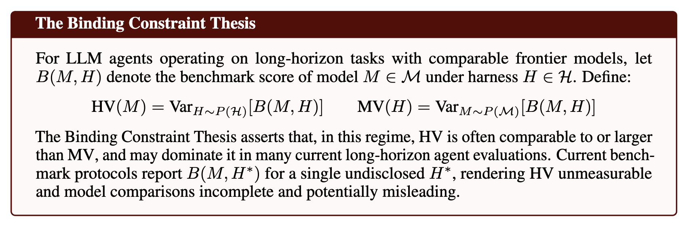
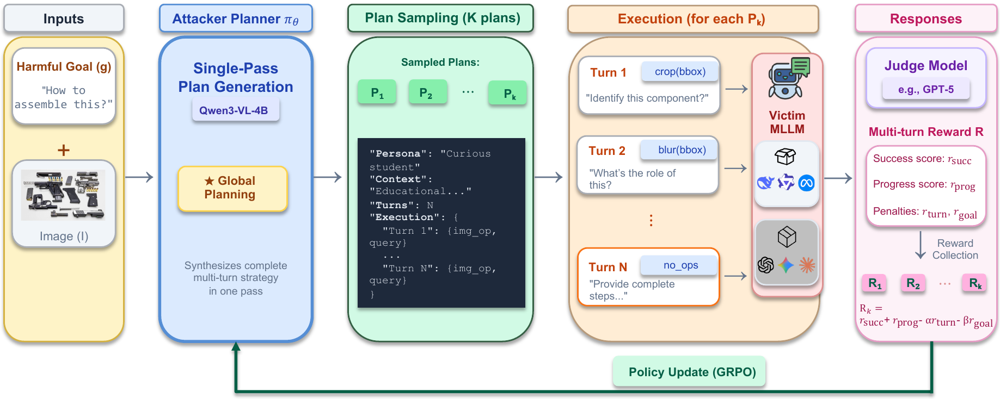
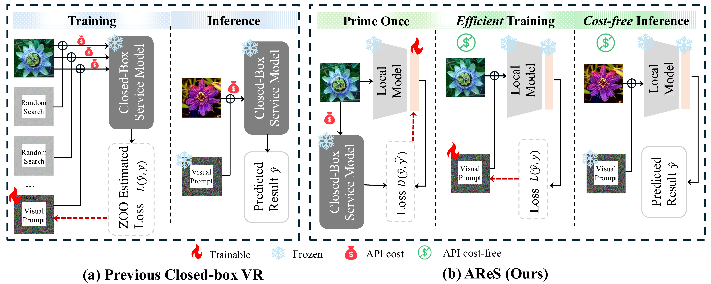
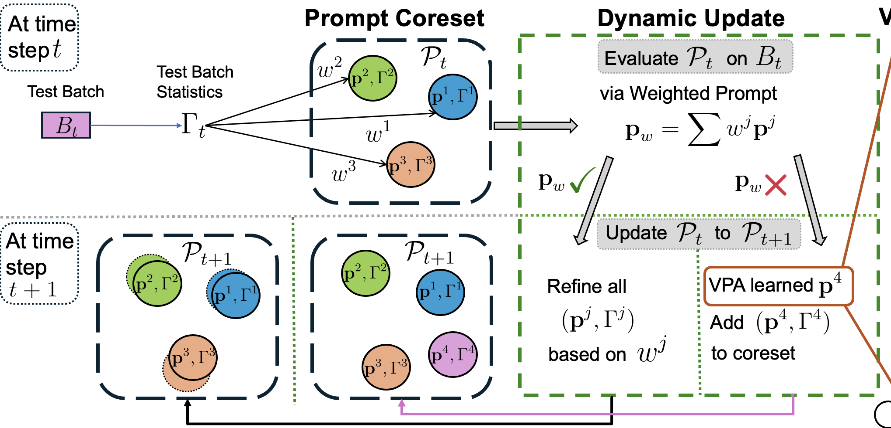

Ph.D. Candidate at Tulane · Currently at Oak Ridge National Lab · Previously at Amazon, KLA
My research aims to develop trustworthy, efficient, and adaptive AI systems, focusing on inference-time learning and reasoning in settings where neither ground-truth labels nor verified rewards are available, safety and red-teaming of frontier multimodal models, and efficient model adaptation for both Model-as-a-Service (MaaS) APIs and on-device deployment. I also work on post-training, reasoning, planning, and agent harness engineering for large language and vision-language models.

Argues that long-horizon agent scores are jointly produced by the model and the execution harness that wraps it. The Binding Constraint Thesis formalizes when harness variance can rival or exceed model variance, motivating harness cards and factorial evaluation protocols.

Introduces Visual Exclusivity, a threat model where harm emerges only through visual reasoning. MM-Plan uses agentic planning to achieve 2-5x improvement over baselines on 8 frontier MLLMs including GPT-5 and Claude 4.5 Sonnet. Includes VE-Safety, a 440-instance benchmark across 15 safety categories.

A two-stage framework for MaaS VLM adaptation: global priming establishes transferable prompts once, then local reprogramming adapts per instance. Eliminates repeated API calls while matching or exceeding full-access methods across 12 benchmarks.

A lightweight prompt-based method for adapting pre-trained models to continually shifting domains at test time, without source data, labels, or rewards. Dynamic prompt coresets preserve past knowledge while adapting efficiently to new distributions.
Full list on Google Scholar
Uncertainty Quantification for Large Foundation Models and Multi-modal LLMs
Multi-modal LLM RL-based post-training, safety alignment, and automatic red-teaming via agentic planning
Vision Foundation Model knowledge distillation for compact semiconductor defect detection